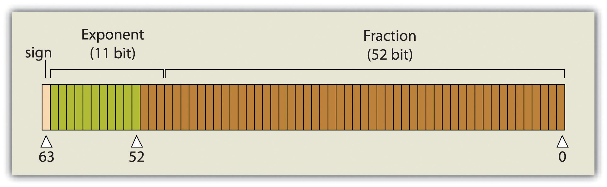
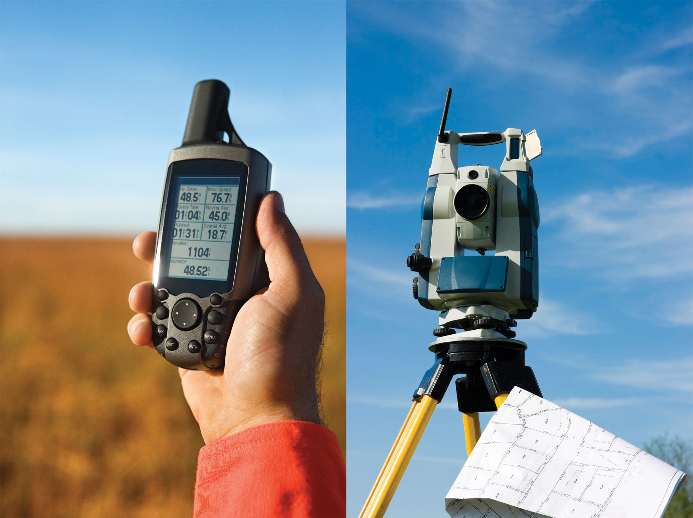
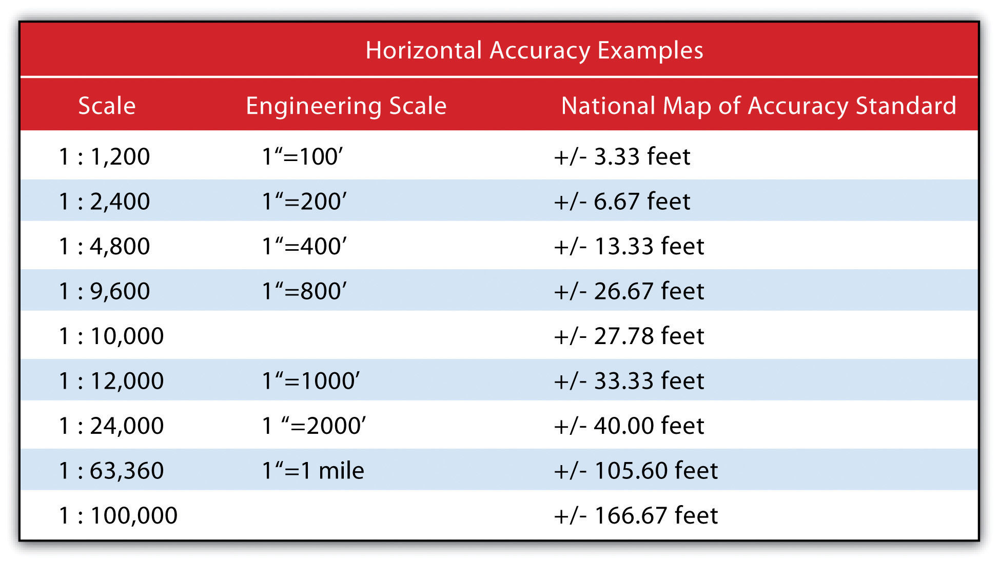
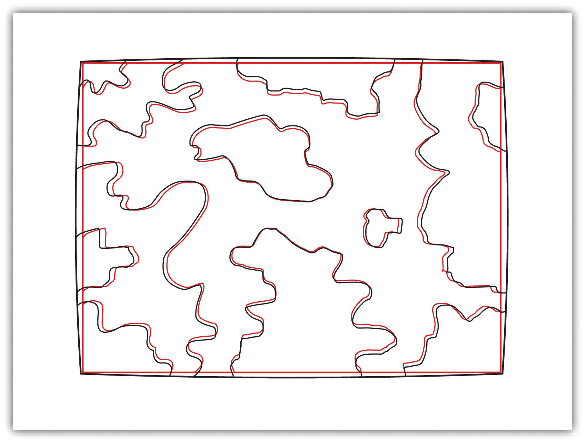

Every user of geospatial data has experienced the challenge of obtaining, organizing, storing, sharing, and visualizing their data. The variety of formats and data structures, as well as the disparate quality, of geospatial data can result in a dizzying accumulation of useful and useless pieces of spatially explicit information that must be poked, prodded, and wrangled into a single, unified dataset. This chapter addresses the basic concerns related to data acquisition and management of the various formats and qualities of geospatial data currently available for use in modern geographic information system (GIS) projects.
Acquiring geographic data is an important factor in any geographic information system (GIS) effort. It has been estimated that data acquisition typically consumes 60 to 80 percent of the time and money spent on any given project. Therefore, care must be taken to ensure that GIS projects remain mindful of their stated goals so the collection of spatial data proceeds in an efficient and effective manner as possible. This chapter outlines the many forms and sources of geospatial data available for use in a GIS.
The type of data that we employ to help us understand a given entity is determined by (1) what we are examining, (2) what we want to know about that entity, and (3) our ability to measure that entity at a desired scale. The most common types of data available for use in a GIS are alphanumeric strings, numbers, Boolean values, dates, and binaries.
An alphanumeric stringA data type made up of any simple combination of letters and numbers that may or may not form coherent words., or text, data type is any simple combination of letters and numbers that may or may not form coherent words. The number data type can be subcategorized as either floating-point or integer. A floating-pointA numerical data value that contains decimal digits. is any data value that contains decimal digits, while an integerA numerical data value that does not contain decimal digits. is any data value that does not contain decimal digits. Integers can be short or long depending on the amount of significant digits in that number. Also, they are based on the concept of the “bit” in a computer. As you may recall, a bit is the most basic unit of information in a computer and stores values in one of two states: 1 or 0. Therefore, an 8-bit attribute would consist of eight 1s or 0s in any combination (e.g., 10010011, 00011011, 11100111).
Short integersAn integer characterized by a 16-bit value. are 16-bit values and therefore can be used to characterize numbers ranging either from −32,768 to 32,767 or from 0 to 65,535 depending on whether the number is signed or unsigned (i.e., contains a + or − sign). Long integersAn integer characterized by a 32-bit value., alternatively, are 32-bit values and therefore can characterize numbers ranging either from −2,147,483,648 to 2,147,483,647 or from 0 to 4,294,967,295.
A single precision floating-pointA floating-point data value occupying 32 bits, characterized by up to 7 bits to the left of the decimal and up to 23 bit values to the right of the decimal point. value occupies 32 bits, like the long integer. However, this data type provides for a value of up to 7 bits to the left of the decimal (a maximum value of 128, or 127 if signed) and up to 23-bit values to the right of the decimal point (approximately 7 decimal digits). A double precision floating-pointA floating-point data value occupying 64 bits, characterized by up to 11 bits to the left of the decimal and up to 52 bit values to the right of the decimal point. value essentially stores two 32-bit values as a single value. Double precision floats, then, can represent a value with up to 11 bits to the left of the decimal point and values with up to 52 bits to the right of the decimal (approximately 16 decimal digits) (Figure 5.1 "Double Precision Floating-Point (64-Bit Value), as Stored in a Computer").
Figure 5.1 Double Precision Floating-Point (64-Bit Value), as Stored in a Computer
Boolean, date, and binary values are less complex. BooleanA data type whose values can be either true or false (1 or 0). values are simply those values that are deemed true or false based on the application of a Boolean operator such as AND, OR, and NOT. The date data type is presumably self-explanatory, while the binary data type represents attributes whose values are either 1 or 0.
In addition to defining data by type, a measurement scale acts to group data according to level of complexity (Stevens 1946).Stevens, S. S. 1946. “On the Theory of Scales of Measurement.” Science 103 (2684): 677–80. For the purposes of GIS analyses, measurement scales can be grouped in to two general categories. Nominal and ordinal data represent categorical data; interval and ratio data represent numeric data.
The most simple data measurement scale is the nominalA data scale that records the name of features but that does not allow for numerical, scalar comparisons between one object and another., or named, scale. The nominal scale makes statements about what to call data points but does not allow for scalar comparisons between one object and another. For example, the attribution of nominal information to a set of points that represent cities will describe whether the given locale is “Los Angeles” or “New York.” However, no further denotations, such as population or voting history, can be made about those locales. Other examples of nominal data include last name, eye color, land-use type, ethnicity, and gender.
Ordinal dataA data scale that places attribute information into ranks. places attribute information into ranks and therefore yields more precisely scaled information than nominal data. Ordinal data describes the position in which data occur, such as first, second, third, and so forth. These scales may also take on names, such as “very unsatisfied,” “unsatisfied,” “satisfied,” and “very satisfied.” Although this measurement scale indicates the ranking of each data point relative to other data points, the ordinal scale does not explicitly denote the exact quantitative difference between these rankings. For example, if an ordinal attribute represents which runner came in first, second, or third place, it does not state by how much time the winning runner beat the second place runner. Therefore, one cannot undertake arithmetic operations with ordinal data. Only sequence is explicit.
A measurement scale that does allow precise quantitative statements to be made about attributes is interval dataA data scale based on values with equal intervals but with no meaningful zero.. Interval data are measured along a scale in which each position is equidistant to one another. Elevation and temperature readings are common representations of interval data. For example, it can be determined through this scale that 30 ºF is 5 ºF warmer than 25 ºF. A notable property of the interval scale is that zero is not a meaningful value in the sense that zero does not represent nothingness, or the absence of a value. Indeed, 0 ºF does not indicate that no temperature exists. Similarly, an elevation of 0 feet does not indicate a lack of elevation; rather, it indicates mean sea level.
Ratio dataA data scale based on values with equal intervals and a meaningful zero. are similar to the interval measurement scale; however, it is based around a meaningful zero value. Population density is an example of ratio data whereby a 0 population density indicates that no people live in the area of interest. Similarly, the Kelvin temperature scale is a ratio scale as 0 K does imply that no heat (temperature) is measurable within the given attribute.
Specific to numeric datasets, data values also can be considered to be discrete or continuous. Discrete dataData that can are limited to a finite number of potential values. are those that maintain a finite number of possible values, while continuous dataData that can take on an infinite number of potential values. can be represented by an infinite number of values. For example, the number of mature trees on a small property will necessarily be between one and one hundred (for argument’s sake). However, the height of those trees represents a continuous data value as there are an infinite number of potential values (e.g., one tree may be 20 feet tall, 20.1 feet, or 20.15 feet, 20.157 feet, and so forth).
Now that we have a sense of the different data types and measurement scales available for use in a GIS, we must direct our thoughts to how this data can be acquired. Primary data captureA direct data acquisition methodology that is associated with an in-the-field effort. is a direct data acquisition methodology that is usually associated with some type of in-the-field effort. In the case of vector data, directly captured data commonly comes from a global positioning system (GPS) or other types of surveying equipment such as a total station (Figure 5.2 "GPS Unit (left) and Total Station (right)"). Total stations are specialized, primary data capture instruments that combine a theodolite (or transit), which measures horizontal and vertical angles, with a tool to measure the slope distance from the unit to an observed point. Use of a total station allows field crews to quickly and accurately derive the topography for a particular landscape.
Figure 5.2 GPS Unit (left) and Total Station (right)
In the case of GPS, handheld units access positional data from satellites and log the information for subsequent retrieval. A network of twenty-four navigation satellites is situated around the globe and provides precise coordinate information for any point on the earth’s surface (Figure 5.3 "Earth Imaging Satellite Capturing Primary Data"). Maintaining a line of sight to four or more of these satellites provides the user with reasonably accurate location information. These locations can be collected as individual points or can be linked together to form lines or polygons depending on user preference. Attribute data such as land-use type, telephone pole number, and river name can be simultaneously entered by the user. This location and attribute data can then be uploaded to the GIS for visualization. Depending on the GPS make and model, this upload often requires some type of intermediate file conversion via software provided by the manufacturer of the GPS unit. However, there are some free online resources that can convert GPS data from one format to another. GPSBabel is an example of such an online resource (http://www.gpsvisualizer.com/gpsbabel).
In addition to the typical GPS unit shown in Figure 5.2 "GPS Unit (left) and Total Station (right)", GPS is becoming increasingly incorporated into other new technologies. For example, smartphones now embed GPS capabilities as a standard technological component. These phone/GPS units maintain comparable accuracy to similarly priced stand-alone GPS units and are largely responsible for a renaissance in facilitating portable, real-time data capture and sharing to the masses. The ubiquity of this technology led to a proliferation of crowdsourced data acquisition alternatives. CrowdsourcingThe collection and reporting of spatial data by a diffuse user community. is a data collection method whereby users contribute freely to building spatial databases. This rapidly expanding methodology is utilized in such applications as TomTom’s MapShare application, Google Earth, Bing Maps, and ArcGIS.
Raster data obtained via direct capture comes more commonly from remotely sensed sources (Figure 5.3 "Earth Imaging Satellite Capturing Primary Data"). Remotely sensed data offers the advantage of obviating the need for physical access to the area being imaged. In addition, huge tracts of land can be characterized with little to no additional time and labor by the researcher. On the other hand, validation is required for remotely sensed data to ensure that the sensor is not only operating correctly but properly calibrated to collect the desired information. Satellites and aerial cameras provide the most ubiquitous sources of direct-capture raster data (Chapter 4 "Data Models for GIS", Section 4.3.1 "Satellite Imagery").
Figure 5.3 Earth Imaging Satellite Capturing Primary Data
Secondary data captureAn indirect data acquisition methodology that utilizes the vast amount of existing data available in both digital and hard-copy formats. is an indirect methodology that utilizes the vast amount of existing geospatial data available in both digital and hard-copy formats. Prior to initiating any GIS effort, it is always wise to mine online resources for existing GIS data that may fulfill your mapping needs without the potentially intensive step of creating the data from scratch. Such digital GIS data are available from a variety of sources including international agencies (CGIAR, CIESIN, United Nations, World Bank, etc.); federal governments (USGS, USDA, NOAA, USFWS, NASA, EPA, US Census, etc.); state governments (CDFG, Teale Data Center, INGIS, MARIS, NH GIS Resources, etc.); local governments (SANDAG, RCLIS, etc.); university websites (UCLA, Duke, Stanford, University of Chicago, Indiana Spatial Data Portal, etc.); and commercial websites (ESRI, GeoEye, Geocomm, etc.). These secondary data are available in a wide assortment of file types, extents, and sizes but is ready-made to be used in most GIS software packages. Often these data are free, but many sites will charge a fee for access to the proprietary information they have developed.
Although these data sources are all cases where the information has been converted to digital format and properly projected for use in a GIS, there is also a great deal of spatial information that can be gleaned from existing, nondigital sources. Paper maps, for example, may contain current or historic information on a locale that cannot be found in digital format. In this case, the process of digitizationThe conversion of analog information to digital information. can be used to create digital files from the original paper copy. Three primary methods exist for digitizing spatial information: two are manual, and one is automated.
Tablet digitizingA manual data capture method whereby a user enters coordinate information into a computer through the use of a digitizing tablet and a digitizing puck. is a manual data capture method whereby a user enters coordinate information into a computer through the use of a digitizing tablet and a digitizing puck. To begin, a paper map is secured to a back-lit digitizing tablet. The backlight allows all features on the map to be easily observed, which reduces eyestrain. The coordinates of the point, line, and/or polygon features on the paper map are then entered into a digital file as the user employs a puck, which is similar to a multibutton mouse with a crosshair, to “click” their way around the vertices of each desired feature. The resulting digital file will need to be properly georeferenced following completion of the digitization task to ensure that this information will properly align with existing datasets.
Heads-up digitizingA manual data capture method whereby a user traces the outlines of features on a computer screen., the second manual data capture method, is referred to as “on-screen” digitizing. Heads-up digitizing can be used on either paper maps or existing digital files. In the case of a paper map, the map must first be scanned into the computer at a high enough resolution that will allow all pertinent features to be resolved. Second, the now-digital image must be registered so the map will conform to an existing coordinate system. To do this, the user can enter control points on the screen and transform, or “rubber-sheet,” the scanned image into real world coordinates. Finally, the user simply zooms to specific areas on the map and traces the points, lines, and/or polygons, similar to the tablet digitization example. Heads-up digitizing is particularly simple when existing GIS files, satellite images, or aerial photographs are used as a baseline. For example, if a user plans to digitize the boundary of a lake as seen from a georeferenced satellite image, the steps of scanning and registering can be skipped, and projection information from the originating image can simply be copied over to the digitized file.
The third, automated method of secondary data capture requires the user to scan a paper map and vectorize the information therein. This vectorizationThe process of converting raster graphics to vector graphics. method typically requires a specific software package that can convert a raster scan to vector lines. This requires a very high-resolution, clean scan. If the image is not clean, all the imperfections on the map will likely be converted to false points/lines/polygons in the digital version. If a clean scan is not available, it is often faster to use a manual digitization methodology. Regardless, this method is much quicker than the aforementioned manual methods and may be the best option if multiple maps must be digitized and/or if time is a limiting factor. Often, a semiautomatic approach is employed whereby a map is scanned and vectorized, followed by a heads-up digitizing session to edit and repair any errors that occurred during automation.
The final secondary data capture method worth noting is the use of information from reports and documents. Via this method, one enters information from reports and documents into the attribute table of an existing, digital GIS file that contains all the pertinent points, lines, and polygons. For example, new information specific to census tracts may become available following a scientific study. The GIS user simply needs to download the existing GIS file of census tracts and begin entering the study’s report/document information directly into the attribute table. If the data tables are available digitally, the use of the “join” and “relate” functions in a GIS (Section 5.2.2 "Joins and Relates") are often extremely helpful as they will automate much of the data entry effort.
The following data are derived from which measurement scale?
A databaseA structured collection of data files. is a structured collection of data files. A database management system (DBMS)A software package that allows for the creation, storage, maintenance, manipulation, and retrieval of large datasets distributed over one or more files. is a software package that allows for the creation, storage, maintenance, manipulation, and retrieval of large datasets that are distributed over one or more files. A DBMS and its associated functions are usually accessed through commercial software packages such as Microsoft Access, Oracle, FileMaker Pro, or Avanquest MyDataBase. Database management normally refers to the management of tabular data in row and column format and is frequently used for personal, business, government, and scientific endeavors. Geospatial database management systems, alternatively, include the functionality of a DBMS but also contain specific geographic information about each data point such as identity, location, shape, and orientation. Integrating this geographic information with the tabular attribute data of a classical DBMS provide users with powerful tools to visualize and answer the spatially explicit questions that arise in an increasingly technological society.
Several types of database models exist, such as the flat, hierarchical, network, and relational models (Worboys 1995; Jackson 1999).Worboys, M. F. 1995. GIS: A Computing Perspective. London: Taylor & Francis., Jackson, M. 1999. “Thirty Years (and More) of Databases.” Information and Software Technology 41: 969–78. A flat databaseA database model whereby all data are stored in a single table. is essentially a spreadsheet whereby all data are stored in a single, large table (Figure 5.4 "Flat Database"). A hierarchical databaseA simple database model that organizes data into a “one-to-many” association across levels. is also a fairly simple model that organizes data into a “one-to-many” association across levels (Figure 5.5 "Hierarchical Database"). Common examples of this model include phylogenetic trees for classification of plants and animals and familial genealogical trees showing parent-child relationships. Network databasesA simple database model that organizes data into a “one-to-many” or “many-to-many” association across levels. are similar to hierarchical databases, however, because they also support “many-to-many” relationships (Figure 5.6 "Network Database"). This expanded capability allows greater search flexibility within the dataset and reduces potential redundancy of information. Alternatively, both the hierarchical and network models can become incredibly complex depending on the size of the databases and the number of interactions between the data points. Modern geographic information system (GIS) software typically employs a fourth model referred to as a relational databaseA database model that relates information across multiple tables according to primary and foreign keys. (Codd 1970).Codd, E. 1970. “A Relational Model of Data for Large Shared Data Banks.” Communications of the Association for Computing Machinery 13 (6): 377–87.
Figure 5.4 Flat Database

Figure 5.5 Hierarchical Database

Figure 5.6 Network Database

A relational database management system (RDBMS)A software package that records information in such a way that data can be accessed without reorganization of the tables. is a collection of tables that are connected in such a way that that data can be accessed without reorganization of the tables. The tables are created such that each column represents a particular attribute (e.g., soil type, PIN number, last name, acreage) and each row contains a unique instance of data for that columnar attribute (e.g., Delhi Sands Soils, 5555, Smith, 412.3 acres)
In the relational model, each table (not surprisingly called a relation) is linked to each other table via predetermined keys (Date 1995).Date, C. 1995. An Introduction to Database Systems. Reading, MA: Addison-Wesley. The primary keyThe attribute whose value uniquely identifies a particular record in an attribute table. represents the attribute (column) whose value uniquely identifies a particular record (row) in the relation (table). The primary key may not contain missing values as multiple missing values would represent nonunique entities that violate the basic rule of the primary key. The primary key corresponds to an identical attribute in a secondary table (and possibly third, fourth, fifth, etc.) called a foreign keyThe attribute that corresponds to a primary key in an associated table.. This results in all the information in the first table being directly related to the information in the second table via the primary and foreign keys, hence the term “relational” DBMS. With these links in place, tables within the database can be kept very simple, resulting in minimal computation time and file complexity. This process can be repeated over many tables as long as each contains a foreign key that corresponds to another table’s primary key.
The relational model has two primary advantages over the other database models described earlier. First, each table can now be separately prepared, maintained, and edited. This is particularly useful when one considers the potentially huge size of many of today’s modern databases. Second, the tables may be maintained separately until the need for a particular query or analysis calls for the tables to be related. This creates a large degree of efficiency for processing of information within a given database.
It may become apparent to the reader that there is great potential for redundancy in this model as each table must contain an attribute that corresponds to an attribute in every other related table. Therefore, redundancy must actively be monitored and managed in a RDBMS. To accomplish this, a set of rules called normal forms have been developed (Codd 1970).Codd, E. 1970. “A Relational Model of Data for Large Shared Data Banks.” Communications of the Association for Computing Machinery 13 (6): 377–87. There are three basic normal forms. The first normal formThe first stage in the normalization of a relational database in which repeating groups and attributes are eliminated by placing them into a separate tables connected via primary keys and foreign keys. (Figure 5.7 "First Normal Form Violation (above) and Fix (below)") refers to five conditions that must be met (Date 1995).Date, C. 1995. An Introduction to Database Systems. Reading, MA: Addison-Wesley. They are as follows:
Figure 5.7 First Normal Form Violation (above) and Fix (below)

The second normal formThe second stage in the normalization of a relational database in which all nonkey attributes are made dependent on the primary key. states that any column that is not a primary key must be dependent on the primary key. This reduces redundancy by eliminating the potential for multiple primary keys throughout multiple tables. This step often involves the creation of new tables to maintain normalization.
Figure 5.8 Second Normal Form Violation (above) and Fix (below)

The third normal formThe third stage in the normalization of a relational database in which all nonprimary keys are made mutually exclusive. states that all nonprimary keys must depend on the primary key, while the primary key remains independent of all nonprimary keys. This form was wittily summed up by Kent (1983)Kent, W. 1983. “A Simple Guide to Five Formal Forms in Relational Database Theory.” Communications of the Association for Computing and Machinery. 26 (2): 120–25. who quipped that all nonprimary keys “must provide a fact about the key, the whole key, and nothing but the key.” Echoing this quote is the rejoinder: “so help me Codd” (personal communication with Foresman 1989).
Figure 5.9 Third Normal Form Violation (above) and Fix (below)

An additional advantage of an RDBMS is that it allows attribute data in separate tables to be linked in a post hoc fashion. The two operations commonly used to accomplish this are the join and relate. The joinAn operation that appends the information of one table into a second table through the use of an attribute or field that is common to both tables. operation appends the fields of one table into a second table through the use of an attribute or field that is common to both tables. This is commonly utilized to combine attribute information from one or more nonspatial data tables (i.e., information taken from reports or documents) with a spatially explicit GIS feature layer. A second type of join combines feature information based on spatial location and association rather than on common attributes. In ArcGIS, three types of spatial joins are available. Users may (1) match each feature to the closest feature, (2) match each feature to the feature that it is part of, or (3) match each feature to the feature that it intersects.
Alternatively, the relateAn operation that temporarily associates two attribute tables through the use of an attribute or field that is common to both tables while keeping the tables physically separate. operation temporarily associates two map layers or tables while keeping them physically separate. Relates are bidirectional, so data can be accessed from the one of the tables by selecting records in the other table. The relate operation also allows for the association of three or more tables, if necessary.
Sometimes it can be unclear as to which operation one should use. As a general rule, joins are most suitable for instances involving one-to-one or many-to-one relationships. Joins are also advantageous due to the fact that the data from the two tables are readily observable in the single output table. The use of relates, on the other hand, are suitable for all table relationships (one-to-one, one-to-many, many-to-one, and many-to-many); however, they can slow down computer access time if the tables are particularly large or spread out over remote locations.
| Instructor | Class | Class Number | Enrollment |
|---|---|---|---|
| Lennon | Advanced Calculus | 10073 | 34 |
| McCartney | Introductory Physical Education | 10045 | 23 |
| Harrison | Auto Repair and Feminism | 10045 | 54 |
| Starr, Best | Quantum Physics | 10023 | 39 |
Geospatial data are stored in many different file formats. Each geographic information system (GIS) software package, and each version of these software packages, supports different formats. This is true for both vector and raster data. Although several of the more common file formats are summarized here, many other formats exist for use in various GIS programs.
The most common vector file format is the shapefileA simple, nontopological, vector file format developed by ESRI to store the geometric location and attribute information of geographic features.. Shapefiles, developed by ESRI in the early 1990s for use with the dBASE III database management software package in ArcView 2, are simple, nontopological files developed to store the geometric location and attribute information of geographic features. Shapefiles are incapable of storing null values, as well as annotations or network features. Field names within the attribute table are limited to ten characters, and each shapefile can represent only point, line, or polygon feature sets. Supported data types are limited to floating point, integer, date, and text. Shapefiles are supported by almost all commercial and open-source GIS software.
Despite being called a “shapefile,” this format is actually a compilation of many different files. Table 5.1 "Shapefile File Types" lists and describes the different file formats associated with the shapefile. Among those listed, only the SHP, SHX, and DBF file formats are mandatory to create a functioning shapefile, while all others are conditionally required. As a general rule, the names for each file should conform to the MS-DOS 8.3 convention when using older versions of GIS software packages. According to this convention, the filename prefix can contain up to eight characters, and the filename suffix contains three characters. The more recent GIS software packages have relaxed this requirement and will accept longer filename prefixes.
Table 5.1 Shapefile File Types
| File Extension | Purpose |
|---|---|
| SHP* | Feature geometry |
| SHX* | Index format for the feature geometry |
| DBF* | Feature attribute information in dBASE IV format |
| PRJ | Projection information |
| SBN and SBX | Spatial index of the features |
| FBN and FBX | Read-only spatial index of the features |
| AIN and AIH | Attribute information for active fields in the table |
| IXS | Geocoding index for read-write shapefiles |
| MXS | Geocoding index for read-write shapefiles with ODB format |
| ATX | Attribute index used in ArcGIS 8 and later |
| SHP.XML | Metadata in XML format |
| CPG | Code page specifications for identifying character encoding |
| * Indicates mandatory files | |
The earliest vector format file for use in GIS software packages, which is still in use today, is the ArcInfo coverageA georelational file format developed by ESRI that supports multiple features types (e.g., points, lines, polygons, annotations) while also storing the topological information associated with those features.. This georelational file format supports multiple features types (e.g., points, lines, polygons, annotations) while also storing the topological information associated with those features. Attribute data are stored as multiple files in a separate directory labeled “Info.” Due to its creation in an MS-DOS environment, these files maintain strict naming conventions. File names cannot be longer than thirteen characters, cannot contain spaces, cannot start with a number, and must be completely in lowercase. Coverages cannot be edited in ArcGIS 9.x or later versions of ESRI’s software package.
The US Census Bureau maintains a specific type of shapefile referred to as TIGER or TIGER/Line (Topologically Integrated Geographic Encoding and Referencing system)A vector file format developed by the US Census Bureau including map features such as census tracts, roads, railroads, buildings, rivers, and other features that support and improve the bureau’s ability to collect census information.. Although these open-source files do not contain actual census information, they map features such as census tracts, roads, railroads, buildings, rivers, and other features that support and improve the bureauand improve the Bureau’s ability to#8217;s ability to collect census information. TIGER/Line shapefiles, first released in 1990, are topologically explicit and are linked to the Census Bureau’s Master Address File (MAF), therefore enabling the geocoding of street addresses. These files are free to the public and can be freely downloaded from private vendors that support the format.
The AutoCAD DXF (Drawing Interchange Format or Drawing Exchange Format)A vector file format developed by Autodesk to allow interchange between engineering-based CAD (computer-aided design) software and other mapping software packages. is a proprietary vector file format developed by Autodesk to allow interchange between engineering-based CAD (computer-aided design) software and other mapping software packages. DXF files were originally released in 1982 with the purpose of providing an exact representation of AutoCAD’s native DWG format. Although the DXF is still commonly used, newer versions of AutoCAD have incorporated more complex data types (e.g., regions, dynamic blocks) that are not supported in the DXF format. Therefore, it may be presumed that the DXF format may become less popular in geospatial analysis over time.
Finally, the US Geological Survey (USGS) maintains an open-source vector file format that details physical and cultural features across the United States. These topologically explicit DLGs (Digital Line Graphics)The vector file format developed by the USGS that maintains information on physical and cultural features across the United States. come in large-, intermediate-, and small-scale depending on whether they are derived from 1:24,000-; 1:100,000-; or 1:2,000,000-scale USGS topographic quadrangle maps. The features available in the different DLG types depend on the scale of the DLG but generally include data such as administrative and political boundaries, hydrography, transportation systems, hypsography, and land cover.
Vector data files can also be structured to represent surface elevation information. A TIN (Triangulated Irregular Network)A vector data structure that uses contiguous, nonoverlapping triangles to represent elevation. is an open-source vector data structure that uses contiguous, nonoverlapping triangles to represent geographic surfaces (Figure 5.10 "Triangulated Irregular Network (TIN)"). Whereas the raster depiction of a surface represents elevation as an average value over the spatial extent of the individual pixel (see Section 5.3.2 "Raster File Formats"), the TIN data structure models each vertex of the triangle as an exact elevation value at a specific point on the earth. The arcs between each vertex are an approximation of the elevation between two vertices. These arcs are then aggregated into triangles from which information on elevation, slope, aspect, and surface area can be derived across the entire extent of the model’s space. Note that term “irregular” in the name of the data model refers to the fact that the vertices are typically laid out in a scattered fashion.
Figure 5.10 Triangulated Irregular Network (TIN)

The use of TINs confers certain advantages over raster-based elevation models (see Section 5.3.2 "Raster File Formats"). First, linear topographic features are very accurately represented relative to their raster counterpart. Second, a comparatively small number of data points are needed to represent a surface, so file sizes are typically much smaller. This is particularly true as vertices can be clustered in areas where relief is complex and can be sparse in areas where relief is simple. Third, specific elevation data can be incorporated into the data model in a post hoc fashion via the placement of additional vertices if the original is deemed insufficient or inadequate. Finally, certain spatial statistics can be calculated that cannot be obtained when using a raster-based elevation model, such as flood plain delineation, storage capacity curves for reservoirs, and time-area curves for hydrographs.
A multitude of raster file format types are available for use in GIS. The selection of raster formats has dramatically increased with the widespread availability of imagery from digital cameras, video recorders, satellites, and so forth. Raster imagery is typically 8-bit (256 colors) or 24-bit (16 million colors). Due to ongoing technological advancements, raster image file sizes have been getting larger and larger. To deal with this potential constraint, two types of file compression are commonly used: lossless and lossy. Lossless compressionA method to reduce the file size of an image without decreasing quality. reduces file size without decreasing image quality. Lossy compressionA method to reduce the file size of an image by exploiting limitations of the human eye through removal of information from that cannot be sensed. attempts to exploit limitations of the human eye by removing information from the image that cannot be sensed. As you may guess, lossy compression results in smaller file sizes than lossless compression.
Among the most common raster files used on the web are the JPEG, TIFF, and PNG formats, all of which are open source and can be used with most GIS software packages. The JPEG (Joint Photographic Experts Group)Raster image format that stores 8-bit values for each of the red, blue, and green colors spaces. and TIFF (Tagged Image File Format)Raster image format that stores 16-bit values for each of the red, blue, and green colors spaces. raster formats are most frequently used by digital cameras to store 8-bit values for each of the red, blue, and green colors spaces (and sometimes 16-bit colors, in the case of TIFF images). JPEGs support lossy compression, while TIFFs can be either lossy or lossless. Unlike JPEG, TIFF images can be saved in either RGB or CMYK color spaces. PNG (Portable Network Graphics)Raster image format that stores 24-bit values for each of the red, blue, and green colors spaces. files are 24-bit images that support either lossy or lossless compression. PNG files are designed for efficient viewing in web-based browsers such as Internet Explorer, Mozilla Firefox, Netscape, and Safari.
Native JPEG, TIFF, and PNG files do not have georeferenced information associated with them and therefore cannot be used in any geospatial mapping efforts. In order to employ these files in a GIS, a world fileA plaintext data file that specifies the locations and transformations of a feature dataset. must first be created. A world file is a separate, plaintext data file that specifies the locations and transformations that allow the image to be projected into a standard coordinate system (e.g., Universal Transverse Mercator [UTM] or State Plane). The filename of the world file is based on the name of the raster file, while a w is typically added into to the file extension. The world file extension name for a JPEG is JPW; for a TIFF, it is TFW; and for a PNG, PGW.
An example of a raster file format with explicit georeferencing information is the proprietary MrSID (Multiresolution Seamless Image Database)A raster format developed by LizardTech, Inc., for use with large aerial photographs or satellite images, whereby portions of a compressed image can be viewed quickly without having to decompress the entire file. format. This lossless compression format was developed by LizardTech, Inc., for use with large aerial photographs or satellite images, whereby portions of a compressed image can be viewed quickly without having to decompress the entire file. The MrSID format is frequently used for visualizing orthophotos.
Like MrSID, the proprietary ECW (Enhanced Compression Wavelet)A raster file format developed by Earth Resource Mapping that supports up to 255 layers of image information and includes georeferencing information within the file structure. format also includes georeferencing information within the file structure. This lossy compression format was developed by Earth Resource Mapping and supports up to 255 layers of image information. Due to the potentially huge file sizes associated with an image that supports so many layers, ECW files represent an excellent option for performing rapid analysis on large images while using a relatively small amount of the computer’s RAM (Random Access Memory), thus accelerating computation speed.
Like the open-source, vector-based DLG, DRGs (Digital Raster Graphics)Raster versions of USGS topographic maps that include all of the collar material from the originals. are scanned versions of USGS topographic maps and include all of the collar material from the originals. The geospatial information found within the image’s neatline is georeferenced, specifically to the UTM coordinate system. These graphics are scanned at a minimum of 250 dpi (dots per inch) and therefore have a spatial resolution of approximately 2.4 meters. DRGs contain up to thirteen colors and therefore may look slightly different from the originals. In addition, they include all the collar material from the original print version, are georeferenced to the surface of the earth, fit the Universal Transverse Mercator (UTM) projection, and are most likely based on the NAD27 data points (NAD stands for North American Datum).
Like the TIN vector format, some raster file formats are developed explicitly for modeling elevation. These include the USGS DEM, USGS SDTS, and DTED file formats. The USGS DEM (US Geological Survey Digital Elevation Model)A raster file format developed by the USGS to represent elevation. is a popular file format due to widespread availability, the simplicity of the model, and the extensive software support for the format. Each pixel value in these grid-based DEMs denotes spot elevations on the ground, usually in feet or meters. Care must be taken when using grid-based DEMs due to the enormous volume of data that accompanies these files as the spatial extent covered in the image begins to increase. DEMs are referred to as digital terrain models (DTMs)USGS DEMs that represent a simple, bare-earth model of the globe. when they represent a simple, bare-earth model and as digital surface models (DSMs)USGS DEMs that include the heights of landscape features such as buildings and trees. when they include the heights of landscape features such as buildings and trees (Figure 5.11 "Digital Surface Model (left) and Digital Terrain Model (right)").
Figure 5.11 Digital Surface Model (left) and Digital Terrain Model (right)

USGS DEMs can be classified into one of four levels of quality (labeled 1 to 4) depending on its source data and resolution. This source data can be 1:24,000-; 1:63,360-; or 1:250,000-scale topographic quadrangles. The DEM format is a single file of ASCII text comprised of three data blocks; A, B, and C. The A block contains header information such as data origin, type, and measurement systems. The B block contains contiguous elevation data described as a six-character integer. The C block contains trailer information such as root-mean square (RMS) error of the scene. The USGS DEM format has recently been succeeded by the USGS SDTS (Spatial Data Transfer Standard) DEMA distribution format for transferring USGS DEMs from one computer to another with zero data loss. format. The SDTS formatUSGS. 2010. “What is SDTS?” USGS, http://mcmcweb.er.usgs.gov/sdts/whatsdts.html. was specifically developed as a distribution format for transferring data from one computer to another with zero data loss.
The DTED (Digital Terrain Elevation Data)An elevation specific raster file format developed for military purposes such as line-of-sight analysis, 3-D visualization, and mission planning. format is another elevation specific raster file format. It was developed in the 1970s for military purposes such as line of sight analysis, 3-D visualization, and mission planning. The DTED format maintains three levels of data over five different latitudinal zones. Level 0 data has a resolution of approximately 900 meters; Level 1 data has a resolution of approximately 90 meters; and Level 2 data has a resolution of approximately 30 meters.
A geodatabaseA recently developed, proprietary ESRI file format that supports both vector and raster feature datasets (e.g., points, lines, polygons, annotation, JPEG, TIFF) within a single file. is a recently developed, proprietary ESRI file format that supports both vector and raster feature datasets (e.g., points, lines, polygons, annotation, JPEG, TIFF) within a single file. This format maintains topological relationships and is stored as an MDB file. The geodatabase was developed to be a comprehensive model for representing and modeling geospatial information.
There are three different types of geodatabases. The personal geodatabaseA type of geodatabase developed for single-user editing, whereby two editors cannot work on the same geodatabase at a given time. was developed for single-user editing, whereby two editors cannot work on the same geodatabase at a given time. The personal geodatabase employs the Microsoft Access DBMS file format and maintains a size limit of 2 gigabytes per file, although it has been noted that performance begins to degrade after file size approaches 250 megabytes. The personal geodatabase is currently being phased out by ESRI and is therefore not used for new data creation.
The file geodatabaseA type of geodatabase that allows only single-user editing for unique feature datasets within a geodatabase. similarly allows only single-user editing, but this restriction applies only to unique feature datasets within a geodatabase. The file geodatabase incorporates new tools such as domains (rules applied to attributes), subtypes (groups of objects with a feature class or table), and split/merge policies (rules to control and define the output of split and merge operations). This format stores information as binary files with a size limit of 1 terabyte and has been noted to perform and scale much more efficiently than the personal geodatabase (approximately one-third of the feature geometry storage required by shapefiles and personal geodatabases). File databases are not tied to any specific relational database management system and can be employed on both Windows and UNIX platforms. Finally, file geodatabases can be compressed to read-only formats that further reduce file size without subsequently reducing performance.
The third hybrid ESRI format is the ArcSDE geodatabaseA type of geodatabase developed to allow multiple editors to simultaneously work on feature datasets within a single geodatabase., which allows multiple editors to simultaneously work on feature datasets within a single geodatabase (a.k.a. versioning). Like the file geodatabase, this format can be employed on both Windows and UNIX platforms. File size is limited to 4 gigabytes and its proprietary nature requires an ArcInfo or ArcEditor license for use. The ArcSDE geodatabase is implemented on the SQL Server Express software package, which is a free DBMS platform developed by Microsoft.
In addition to the geodatabase, Adobe Systems Incorporated’s geospatial PDF (Portable Document Format)A nonproprietary file format developed by Adobe Systems, Inc., that allows for the representation of geometric entities such as points, lines, and polygons. is an open-source format that allows for the representation of geometric entities such as points, lines, and polygons. Geospatial PDFs can be used to find and mark coordinate pairs, measure distances, reproject files, and georegister raster images. This format is particularly useful as the PDF is widely accepted to be the preferred standard for printable web documents. Although functionally similar, the geospatial PDF should not be confused with the GeoPDF format developed by TerraGo Technologies. Rather, the GeoPDF is a branded version of the geospatial PDF.
Finally, Google Earth supports a new, open-source, hybrid file format referred to as a KML (Keyhole Markup Language)An open-source hybrid file format developed for Google Earth.. KML files associate points, lines, polygons, images, 3-D models, and so forth, with a longitude and latitude value, as well as other view information such as tilt, heading, altitude, and so forth. KMZ files are commonly encountered, and they are zipped versions KML files.
Not all geospatial data are created equally. Data quality refers to the ability of a given dataset to satisfy the objective for which it was created. With the voluminous amounts of geospatial data being created and served to the cartographic community, care must be taken by individual geographic information system (GIS) users to ensure that the data employed for their project is suitable for the task at hand.
Two primary attributes characterize data quality. AccuracyHow close a measurement is to its actual value; often expressed as a probability. describes how close a measurement is to its actual value and is often expressed as a probability (e.g., 80 percent of all points are within +/− 5 meters of their true locations). PrecisionThe variance of a value when repeated measurements are taken. refers to the variance of a value when repeated measurements are taken. A watch may be correct to 1/1000th of a second (precise) but may be 30 minutes slow (not accurate). As you can see in Figure 5.12 "Accuracy and Precision", the blue darts are both precise and accurate, while the red darts are precise but inaccurate.
Figure 5.12 Accuracy and Precision
Several types of error can arise when accuracy and/or precision requirements are not met during data capture and creation. Positional accuracyThe probability of a feature being within +/− units of either its true location on earth (absolute positional accuracy) or its location in relation to other mapped features (relative positional accuracy). is the probability of a feature being within +/− units of either its true location on earth (absolute positional accuracy) or its location in relation to other mapped features (relative positional accuracy). For example, it could be said that a particular mapping effort may result in 95 percent of trees being mapped to within +/− 5 feet for their true location (absolute), or 95 percent of trees are mapped to within +/− 5 feet of their location as observed on a digital ortho quarter quadrangle (relative).
Speaking about absolute positional error does beg the question, however, of what exactly is the true location of an object? As discussed in Chapter 2 "Map Anatomy", differing conceptions of the earth’s shape has led to a plethora of projections, data points, and spheroids, each attempting to clarify positional errors for particular locations on the earth. To begin addressing this unanswerable question, the US National Map Accuracy Standard (or NMAS) suggests that to meet horizontal accuracy requirements, a paper map is expected to have no more than 10 percent of measurable points fall outside the accuracy values range shown in Figure 5.13 "Relation between Positional Error and Scale". Similarly, the vertical accuracy of no more than 10 percent of elevations on a contour map shall be in error of more than one-half the contour interval. Any map that does not meet these horizontal and vertical accuracy standards will be deemed unacceptable for publication.
Figure 5.13 Relation between Positional Error and Scale
Positional errors arise via multiple sources. The process of digitizing paper maps commonly introduces such inaccuracies. Errors can arise while registering the map on the digitizing board. A paper map can shrink, stretch, or tear over time, changing the dimensions of the scene. Input errors created from hastily digitized points are common. Finally, converting between coordinate systems and transforming between data points may also introduce errors to the dataset.
The root-mean square (RMS) error is frequently used to evaluate the degree of inaccuracy in a digitized map. This statistic measures the deviation between the actual (true) and estimated (digitized) locations of the control points. Figure 5.14 "Potential Digitization Error" illustrates the inaccuracies of lines representing soil types that result from input control point location errors. By applying an RMS error calculation to the dataset, one could determine the accuracy of the digitized map and thus determine its suitability for inclusion in a given study.
Figure 5.14 Potential Digitization Error
Positional errors can also arise when features to be mapped are inherently vague. Take the example of a wetland (Figure 5.15 "Defining a Wetland Boundary"). What defines a wetland boundary? Wetlands are determined by a combination of hydrologic, vegetative, and edaphic factors. Although the US Army Corps of Engineers is currently responsible for defining the boundary of wetlands throughout the country, this task is not as simple as it may seem. In particular, regional differences in the characteristics of a wetland make delineating these features particularly troublesome. For example, the definition of a wetland boundary for the riverine wetlands in the eastern United States, where water is abundant, is often useless when delineating similar types of wetlands in the desert southwest United States. Indeed, the complexity and confusion associated with the conception of what a “wetland” is may result in difficulties defining the feature in the field, which subsequently leads to positional accuracy errors in the GIS database.
Figure 5.15 Defining a Wetland Boundary
In addition to positional accuracy, attribute accuracyThe difference between information as recorded in an attribute table and the real-world features they represent. is a common source of error in a GIS. Attribute errors can occur when an incorrect value is recorded within the attribute field or when a field is missing a value. Misspelled words and other typographical errors are common as well. Similarly, a common inaccuracy occurs when developers enter “0” in an attribute field when the value is actually “null.” This is common in count data where “0” would represent zero findings, while a “null” would represent a locale where no data collection effort was undertaken. In the case of categorical values, inaccuracies occasionally occur when attributes are mislabeled. For example, a land-use/land-cover map may list a polygon as “agricultural” when it is, in fact, “residential.” This is particularly true if the dataset is out of date, which leads us to our next source of error.
Temporal accuracyThe potential error related to the age or timeliness of a dataset. addresses the age or timeliness of a dataset. No dataset is ever completely current. In the time it takes to create the dataset, it has already become outdated. Regardless, there are several dates to be aware of while using a dataset. These dates should be found within the metadata. The publication date will tell you when the dataset was created and/or released. The field date relates the date and time the data was collected. If the dataset contains any future prediction, there should also be a forecast period and/or date. To address temporal accuracy, many datasets undergo a regular data update regimen. For example, the California Department of Fish and Game updates its sensitive species databases on a near monthly basis as new findings are continually being made. It is important to ensure that, as an end-user, you are constantly using the most up-to-date data for your GIS application.
The fourth type of accuracy in a GIS is logical consistencyA trait exhibited by data that is topologically correct.. Logical consistency requires that the data are topologically correct. For example, does a stream segment of a line shapefile fall within the floodplain of the corresponding polygon shapefile? Do roadways connect at nodes? Do all the connections and flows point in the correct direction in a network? In regards to the last question, the author was recently using an unnamed smartphone application to navigate a busy city roadway and was twice told to turn the wrong direction down one-way streets. So beware, errors in logical consistency may lead to traffic violations, or worse!
The final type of accuracy is data completenessThe trait of a dataset comprehensively including all features required to ensure accurate mapping results.. Comprehensive inclusion of all features within the GIS database is required to ensure accurate mapping results. Simply put, all the data must be present for a dataset to be accurate. Are all of the counties in the state represented? Are all of the stream segments included in the river network? Is every convenience store listed in the database? Are only certain types of convenience stores listed within the database? Indeed, incomplete data will inevitably lead to incomplete or insufficient analysis.